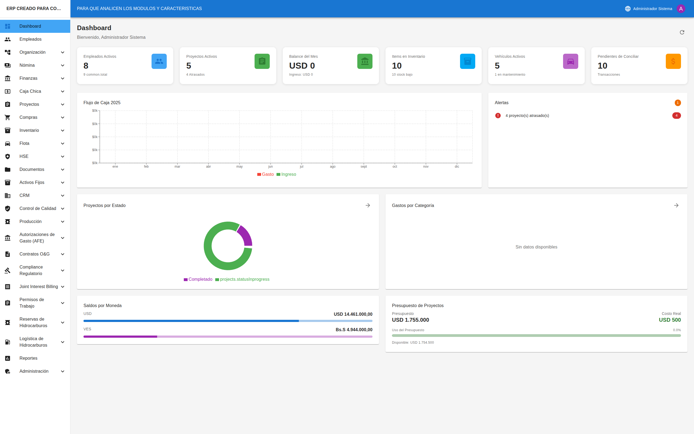

Suite Atilax · software industrial propio
El campo, el patio de tanques y la máquina, en un solo software
Plataformas de operación para petróleo y gas que se instalan en el servidor de su empresa. Sus datos se quedan en casa.

Plataformas de operación para petróleo y gas que se instalan en el servidor de su empresa. Sus datos se quedan en casa.

Su campo, en sus manos: pozos, SCADA ISA-101, comandos con dos firmas y alarmas ISA-18.2.
Ver producto →
Gestión de tanques grado transferencia y custodia. Una cifra fiscal no se teclea: se deriva.
Ver producto →
Control de balancín hidráulico: carta dinamométrica en vivo, diagnóstico y alarmas ISA-18.2.
Ver producto →
Administración, compras, inventario, proyectos y HSE para empresas de servicio petrolero.
Ver producto →Cada demo tiene un usuario de solo lectura: lo ve todo y no puede cambiar nada.


Cada demo corre sobre datos de demostración en nuestro servidor. El usuario de abajo es de solo lectura: ve todas las pantallas, pero ningún botón que cambie datos le va a funcionar.
HMI del balancín hidráulico con un simulador conectado: carta dinamométrica en vivo, alarmas, auditoría.
https://balancin.atilax.iovisorAtilax-Visor-2026Finanzas, compras, inventario, proyectos, CRM y HSE con una empresa de ejemplo.
https://erp.atilax.iodemo@atilax.io••••••••••
Patio de tanques simulado con telemetría de radar, cálculo MPMS y tickets de custodia.
https://tk.atilax.ioinspector@atilax.io
Un campo de demostración con pozos, estaciones, SCADA y alarmas en vivo.
https://wellos.atilax.iovisor@atilax.io